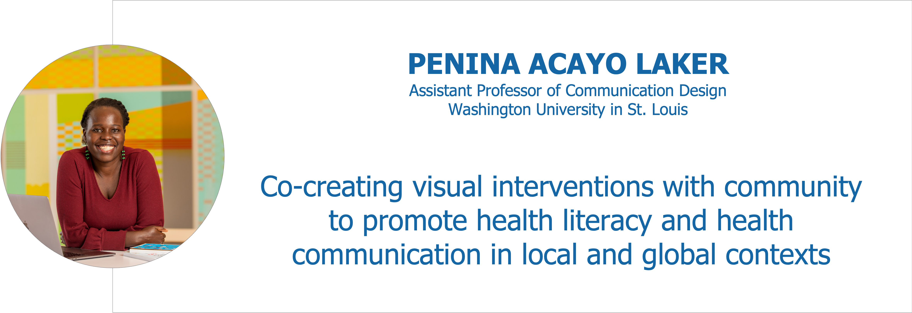
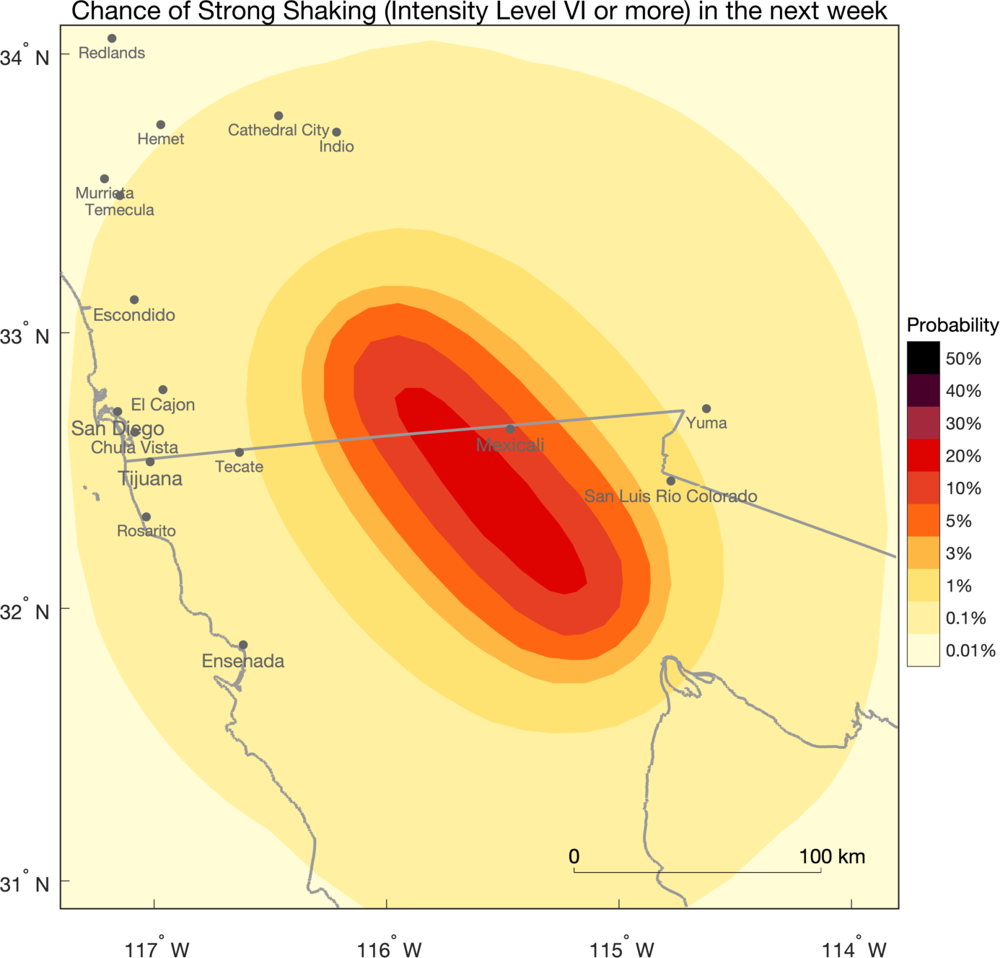

Visualization for Communication (VisComm)
WORKSHOP SUMMARY
While the visualization field consists of researchers exploring how people perceive information and different data visualization tools and platforms, there is an even larger community of analysts, practitioners, and organizations who are creating data and information visualizations and communicating their work every day. The challenges these groups face in communicating their work are often distinct from the research taking place in the academic community.
Most people experience visualization as communication and presentation. The New York Times and other publications regularly release interactive visuals depicting complex datasets including political topics, budgets, and sports. An independent community of visualization practitioners and bloggers has also sprung up, producing and deconstructing visualizations of data of broad interest. Free visualization tools such as D3, Data Wrapper, Tableau Public, and others are available and widely used.
The VisComm workshop brings together practitioners and researchers from a broad range of disciplines to address questions raised by the new and evolving role of data visualization in our everyday lives. We encourage participation from journalists, designers, practitioners, health communicators, and others who do not typically attend IEEE VIS.
DATE AND LOCATION
The workshop will be held at the Melbourne Convention and Exhibition Centre Sunday, October 22, 2023: 2:00 PM-5:00 PM AEDT (UTC+11).
PROGRAM
Opening (2:00PM - 2:15PM AEDT)
Keynote (2:15PM - 3:15PM AEDT)

Abstract
Public health-related issues disproportionately impact under-resourced communities with lower literacy levels and limited access to vital healthcare information. Moreover, healthcare information is often misrepresented and filled with false rumors about sickness and treatment. Existing visual solutions often fail to communicate the most straightforward messages due to overly complex narratives and culturally out-of-context imagery. Participatory design methods, such as co-creation, have gained popularity for their effectiveness in generating culturally relevant solutions and empowering participants. From simplified iconographic symbols that communicate common ailments associated with contracting and treating Malaria in Kibera, Kenya, to illustrated visual narratives that promote health and mental health behaviors among primary school children in rural Uganda, this talk examines the critical role of active audience participation in designing visual interventions that empower involved participants. A unified visual language that uses simplified iconography with a human-centered approach enables the designs to communicate to the specific literacy levels and cultural values of the communities involved.
Bio
Penina Acayo Laker is a design researcher and Assistant Professor of Communication Design at Washington University in St. Louis. Through community-centered interdisciplinary research projects, Penina explores how design can facilitate equitable engagement between community members and stakeholders, locally and internationally. She is the founding director of the Health Communication Design Studio and is currently addressing the impact of health disparities on underserved minority populations in St. Louis and broadening the scope and access of design education to young people in Uganda through DesignEd workshops and My African Aesthetic Podcast which she co-hosts. She has collaborated on an award-winning project that used simplified iconography to communicate ailments associated with the spread, prevention, and treatment of malaria in Kibera, Kenya. She is a co-editor of the award-winning book, The Black Experience in Design: Identity, Reflection and Expression, a 600-page anthology featuring essays, teaching practices, research, and conversations on design with Black/African educators, scholars, and thinkers.
Break (3:15PM - 3:45PM AEDT)
Papers and Visual Case Study (3:45PM - 4:51PM AEDT)

3:45PM - 3:57PM:
Visual Communication of Aftershock Forecasts Based on User Needs: A Case Study of the United States, Mexico and El Salvador
Max Schneider, Anne Wein, Nicholas van der Elst, Sara K. McBride, Julia Becker, Raul R Castro, Manuel Diaz, Hector Gonzalez-Huizar, Jeanne Hardebeck, Andrew Michael, Luis Ernesto Mixco, Morgan Page, Jocelyn I Palomo
Abstract: Aftershock forecasts can help reduce seismic risk...
3:57PM - 4:04PM:
[VCS] Animating history: An energy Sankey movie, 1800–2019
Robert Suits, Ben Kleeman, Nathan Matteson, Liz Moyer, Milson Munakami, Kalyan Reddivari
Concern over climate change is driving interest in changing the U.S. energy system, which is the result of two centuries of gradual development...
Closing (4:52PM - 5:00PM AEDT)
WORKSHOP TOPICS
VisComm seeks contributions addressing questions including:
- How should visualization adapt to its new, more diverse audience? Visualization for communication addresses an audience that is much more varied in demographics and literacy than visualization for analysis.
- When do visualizations communicate successfully, and how can we measure that success? Methods might include web analytics, behavioral studies, eye tracking, or even galvanic skin response.
- How can practitioners build visualizations that communicate successfully? Are there models that can guide effective communicative visualization, possibly derived from theories of aesthetics, memory, metaphor, or persuasion?
- Are there certain visualization techniques (like "visual embellishments") that are particularly helpful for communication? How well do they work in concert?
- What tools do practitioners need to help them build visualizations for communication? What are typical practitioner workflows, and which parts of them are most challenging?
- Which application areas are still emerging for communicative visualization? How would the success of new tools be measured?
- What new lessons about visualization for communication are being revealed by the COVID-19 pandemic? For example, should physical distancing and economic disruption change communicative visualizations?
- How can data visualization help to fight against misleading facts and disinformation? What tools, platforms, and approaches have been useful to dispel untruths?
We particularly encourage contributors to address and illustrate issues like these with visual case studies that demonstrate the success or failure of communicative visualization projects in data journalism, public health and more. Our goal is to consider a broad range of examples and learn from their design decisions and process.
We invite contributions from any discipline, but particularly encourage journalists and designers to submit their work involving data-based communication or reporting. Scientific contributions concerning visualization for communication are of course welcome, as well.
CONTRIBUTE
VisComm has four submission tracks: short papers (research or position), visual case studies, and late-breaking works in progress. Selection criteria are clarity, relevance to the workshop, innovation, and quality of questions for attendees.
Short Research Papers
We invite submission of research papers between 2 and 6 pages long, including references, with length matching content. Research papers will be reviewed based on how well claims are supported by evidence. Submissions are expected to include all materials and data needed to replicate and reproduce any figures, analyses, and methods. If anything cannot be publicly shared (e.g., for data privacy concerns), state the reason in the paper.
Short Position Papers
We invite submission of position papers between 2 and 6 pages long, including references, with length matching content. Position papers are problem discussions or statements describing the author's relevant experience and ideas with regards to methods and methodologies for visualization research, and in particular the focus topic of the workshop. Position papers will be selected according to their importance and relevance for the workshop topics and how well they will fit the planned discussions.
Visual Case Studies
We invite practitioners to submit a one-page write-up together with a link to an online piece or a short video. The write-up should explain what you made, why you made it, outcome/responses (both expected and unexpected), etc. The goal is to show the work of journalists, designers, people working for governments or non-profits, etc., who use data to inform and communicate.
Late-Breaking Works in Progress
The purpose of this category is to present work in progress and receive feedback from attendees.
For research that is in progress, this session will provide a supportive atmosphere for helpful feedback and fresh perspectives on your aims and/or methods. Recommended structure for your one-page submission is: introduction, preliminary methods, preliminary findings (if applicable), and questions for attendees.
For practitioners, this is an opportunity to present contributions that showcase innovative visualizations or provide provocations for new ideas to emerge. Your one-page brief should include project background, design objectives, methods or design process, links to visualization design alternatives, preliminary findings (if available), and questions for attendees.
FORMATTING AND SUBMITTING
Your paper, abstract or write-up should take the form of a PDF file, formatted in the VGTC conference style, which has both LaTeX and MS Word templates. However, please replace the statement about IEEE copyright and reprints with the following text: "This work is licensed under a Creative Commons Attribution 4.0 International License."
All submissions should contain full author names and affiliations. If applicable, a short video (up to 5 min. in length) may also be submitted. Submissions will be juried by the organizers. At least one author of each accepted submission must register for the conference (even if only for the workshop). Registration information is available on the IEEE VIS website.
ACCEPTED SUBMISSIONS
All accepted submissions will be posted on the workshop website.
We expect authors of accepted submissions to post their documents on the Open Science Framework's preprint archive, using the instructions we send. Authors are welcome to post an initial version of their submission earlier. Our OSF workshop papers are not considered archival by IEEE, and may be published elsewhere at a later date. However, we understand that authors from non-engineering disciplines may have different prior publication standards; please contact the chairs if you must publish your accepted submission differently.
Presenting authors can make use of a reduced workshop-only registration fee at IEEE VIS. Additionally, the IEEE VIS Inclusivity & Diversity Scholarship Committee provides complimentary conference registration based on need.
IMPORTANT DATES
deadlines occur at 11:59 PM in the last timezone on Earth.
Short Papers and Visual Case Studies
- Submission deadline:
July 15, 2023 July 24, 2023
- Notification:
August 15, 2023 August 24, 2023
- Camera-ready deadline:
September 1, 2023 September 5, 2023
Late-Breaking Works in Progress
- Submission deadline: September 15, 2023
- Notification: September 28, 2023
- Camera-ready deadline: October 5, 2023
All Submission Tracks
- Speaker schedule available: October 11, 2023
- Workshop: October 22 or 23, 2023
ORGANIZERS
The quickest way to contact VisComm's organizers is via their shared email, viscomm_chairs@googlegroups.com
Paul Parsons, Purdue University
Alvitta Ottley, Washington University in St. Louis
Jonathan Schwabish, Urban Institute
Alice Feng, Urban Institute
STUDENT COMMITTEE
Melanie Bancilhon, Washington University in St. Louis
Sunwoo Ha, Washington University in St. Louis
REVIEWERS
Kaustav Bhattacharjee, New Jersey Institute of Technology
Huyen N. Nguyen, Texas Tech University
Muna Alebri, University College London
Ying Zhu, Georgia State University
Wanwan Li, University of South Florida
Ibrahim Al-Hazwani, University of Zurich
Yaxuan Yin, School of Information
Xiaohan Ding, Virginia Tech
Prakash Chandra Shukla, Purdue University
Ridhima Gupta, Georgia Institute of Technology
Shelly Shiying Cheng, Columbia University
Saugat Pandey, Washington University in St. Louis
Oen McKinley, Washington University in St. Louis
Ali Baigelenov, Purdue University